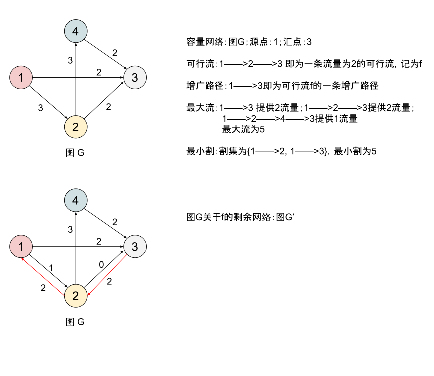
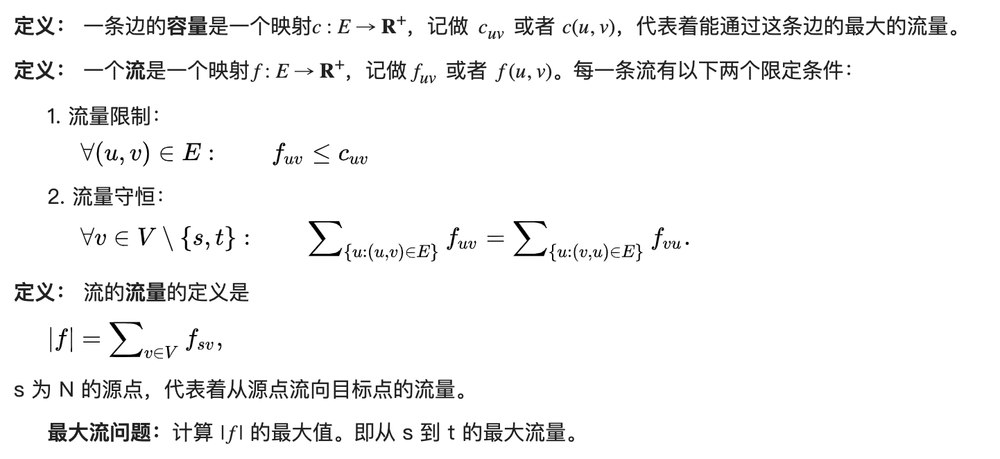
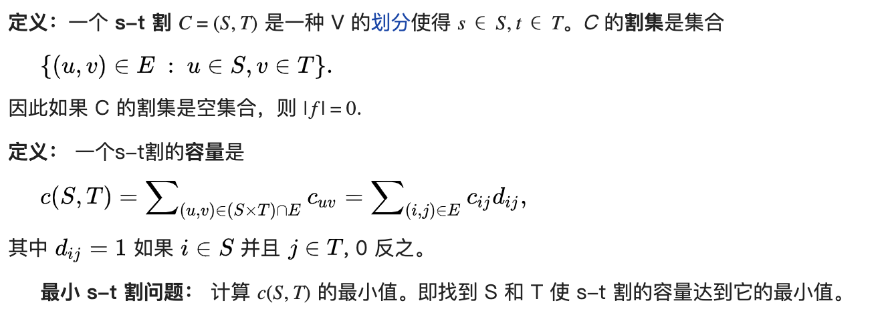
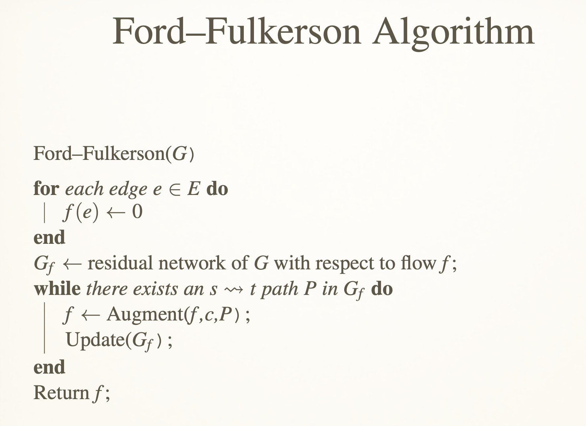
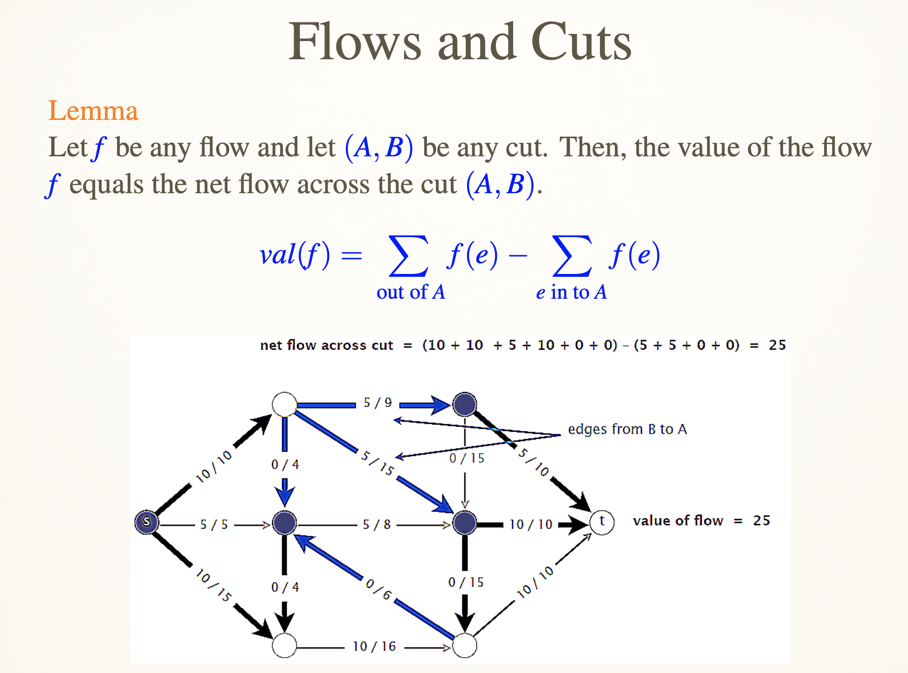

<!DOCTYPE html>
<html lang="en">

<head>
  <meta charset="utf-8" />
   
  <meta name="keywords" content="丁星乐、学习、工作、生活" />
   
  <meta name="description" content="分享丁星乐的学习、工作与享乐时光" />
  
  <meta name="viewport" content="width=device-width, initial-scale=1, maximum-scale=1" />
  <title>
    Algorithm_Network_Flow |  丁星乐
  </title>
  <meta name="generator" content="hexo-theme-yilia-plus">
  
  <link rel="shortcut icon" href="/favicon.ico" />
  
  
<link rel="stylesheet" href="/css/style.css">

  
<script src="/js/pace.min.js"></script>


  

  

</head>

</html>

<body>
  <div id="app">
    <main class="content">
      <section class="outer">
  <article id="post-Algorithm-Network-Flow" class="article article-type-post" itemscope
  itemprop="blogPost" data-scroll-reveal>

  <div class="article-inner">
    
    <header class="article-header">
       
<h1 class="article-title sea-center" style="border-left:0" itemprop="name">
  Algorithm_Network_Flow
</h1>
  

    </header>
    

    
    <div class="article-meta">
      <a href="/2020/04/14/Algorithm-Network-Flow/" class="article-date">
  <time datetime="2020-04-14T15:31:34.000Z" itemprop="datePublished">2020-04-14</time>
</a>
      
  <div class="article-category">
    <a class="article-category-link" href="/categories/%E7%AE%97%E6%B3%95%E7%AC%94%E8%AE%B0/">算法笔记</a>
  </div>

      
      
<div class="word_count">
    <span class="post-time">
        <span class="post-meta-item-icon">
            <i class="ri-quill-pen-line"></i>
            <span class="post-meta-item-text"> 字数统计:</span>
            <span class="post-count">1.4k字</span>
        </span>
    </span>

    <span class="post-time">
        &nbsp; | &nbsp;
        <span class="post-meta-item-icon">
            <i class="ri-book-open-line"></i>
            <span class="post-meta-item-text"> 阅读时长≈</span>
            <span class="post-count">5分钟</span>
        </span>
    </span>
</div>

      
    </div>
    

    
    
    <div class="tocbot"></div>


    

    <div class="article-entry" itemprop="articleBody">
      


      

      
      <h2 id="基本概念"><a href="#基本概念" class="headerlink" title="基本概念"></a>基本概念</h2><p></p>
<p><strong>容量网络</strong>:设G(V,E),是一个有向网络,在V中指定了一个顶点,称为源点(记为Vs),以及另一个顶点,称为汇点(记为Vt);对于每一条弧&lt;u,v&gt;属于E,对应有一个权值c(u,v)&gt;0,称为弧的容量.通常吧这样的有向网络G称为容量网络.</p>
<p><strong>弧的流量</strong>:通过容量网络G中每条弧&lt;u,v&gt;,上的实际流量(简称流量),记为f(u,v);</p>
<p><strong>网络流</strong>:所有弧上流量的集合f={f(u,v)},称为该容量网络的一个网络流.</p>
<p><strong>可行流</strong>:在容量网络G中满足以下条件的网络流f,称为可行流.</p>
<p>​    a.弧流量限制条件:   0&lt;=f(u,v)&lt;=c(u,v);</p>
<p>​    b:平衡条件:即流入一个点的流量要等于流出这个点的流量,(源点和汇点除外).</p>
<p>若网络流上每条弧上的流量都为0,则该网络流称为零流.</p>
<p><strong>伪流</strong>:如果一个网络流只满足弧流量限制条件,不满足平衡条件,则这种网络流为伪流,或称为容量可行流.(预流推进<a href="http://lib.csdn.net/base/31" target="_blank" rel="noopener">算法</a>有用)</p>
<p><strong>最大流</strong>:</p>
<p></p>
<p>流的概念在数学上是一个函数，y(e, f ) = 0, f为边e的流量。</p>
<p><strong>弧的类型</strong>:</p>
<p>a.饱和弧:即f(u,v)=c(u,v);</p>
<p>b.非饱和弧:即f(u,v)&lt;c(u,v);</p>
<p>c.零流弧:即f(u,v)=0;</p>
<p>d.非零流弧:即f(u,v)&gt;0.</p>
<p><strong>链</strong>:在容量网络中,称顶点序列(u1,u2,u3,u4,..,un,v)为一条链要求相邻的两个顶点之间有一条弧.</p>
<p>设P是G中一条从Vs到Vt的链,约定从Vs指向Vt的方向为正方向.在链中并不要求所有的弧的方向都与链的方向相同.</p>
<p>a.前向弧:(方向与链的正方向一致的弧),其集合记为P+,</p>
<p>b.后向弧:(方向与链的正方向相反的弧),其集合记为P-.</p>
<p><strong>增广路(Augment Path)</strong>:</p>
<p>设f是一个容量网络G中的一个可行流,P是从Vs到Vt 的一条链,若P满足以下条件:</p>
<p>a.P中所有前向弧都是非饱和弧,</p>
<p>b.P中所有后向弧都是非零弧.</p>
<p>则称P为关于可行流f 的一条增广路.</p>
<p>沿这增广路改进可行流的操作称为增广.</p>
<p><strong>残留容量</strong>:给定容量网络G(V,E),及可行流f,弧&lt;u,v&gt;上的残留容量记为cl(u,v)=c(u,v)-f(u,v).每条弧上的残留容量表示这条弧上可以增加的流量.因为从顶点u到顶点v的流量减少,等效与从顶点v到顶点u的流量增加,所以每条弧&lt;u,v&gt;上还有一个反方向的残留容量cl(v,u)=-f(u,v).</p>
<p><strong>剩余网络(Residual Network)</strong>:设有容量网络G(V,E)及其上的网络流f。G关于f的剩余网络记为G(V’,E’).其中G’的顶点集V’和G中顶点集G相同,V’=V.对于G中任何一条弧&lt;u,v&gt;,如果f(u,v)&lt;c(u,v),那么在G’中有一条弧&lt;u,v&gt;属于E’,其容量为c’(u,v)=c(u,v)-f(u,v),如果f(u,v)&gt;0,则在G’中有一条弧&lt;v,u&gt;属于E’,其容量为c’(v,u)=f(u,v)</p>
<p><strong>最小割</strong>:</p>
<p></p>
<p>割概念应用在数学上是两个集合U, V    </p>
<p><strong>最大流最小割定理</strong>:</p>
<p>对于一个网络流，从源点到汇点的最大的流量等于最小割的每一条边权重的和。</p>
<h2 id="lec-10"><a href="#lec-10" class="headerlink" title="lec 10"></a>lec 10</h2><p><strong>Ford-Fulkerson算法</strong></p>
<p></p>
<p></p>
<p><strong>最大流最小割理论</strong></p>
<p>流 &lt;= 割</p>
<blockquote>
<p>Let f be a flow and let (A, B) be any cut. If val(f) = cap(A, B), then f is a max flow and (A, B) is a min cut.</p>
<p>Value of a max flow = capacity of a min cut</p>
</blockquote>
<p>由最大流求最小割:</p>
<p>首先对图G求最大流，得到剩余网络G’</p>
<p>在G’中从s点bfs，找到所有s点reachable的点组成点集S，剩下点组成点集合T。S，T即为最小割。</p>
<p>由最小割求最大流：？？？</p>
<p><strong>Ford-Fulkerson算法的改进</strong></p>
<p>Ford-Fulkerson限制边权值为整数，并且时间复杂度为O(mnC). C为最大流量，说明Ford-Fulkerson可以无限坏（例如C为2^100）</p>
<h2 id="lec-11"><a href="#lec-11" class="headerlink" title="lec 11"></a>lec 11</h2><h2 id="lec-12"><a href="#lec-12" class="headerlink" title="lec 12"></a>lec 12</h2><p>二分图的匹配</p>
<p><strong>二分图：</strong></p>
<p>设G=(V,E)是一个无向图，如果顶点V可分割为两个互不相交的子集(A,B)，并且图中的每条边（i，j）所关联的两个顶点i和j分别属于这两个不同的顶点集(i in A,j in B)，则称图G为一个二分图。</p>
<p></p>
<p><strong>匹配：</strong></p>
<p>匹配是指一组边的集合，集合里面的所有边都没有共同顶点。<strong>最大匹配</strong>就是指不能再加边的匹配。</p>
<p><strong>极大匹配：</strong></p>
<p>最大匹配可以有好几个，其中边数最多的最大匹配为极大匹配。</p>
<p><strong>完美匹配：</strong></p>
<p>首先是一个匹配，其次所有的顶点都跟其中一条边相连。</p>
<p><strong>点覆盖：</strong></p>
<p>点覆盖是指一组点的集合，图里面每条边都跟集合里面至少一个点相连。<strong>最小点覆盖</strong>就是指基数最小也就是点最少的集合。</p>
<p><strong>二分图匹配</strong>：</p>
<p>找一个二分图的最大匹配</p>
<h2 id="lec-13"><a href="#lec-13" class="headerlink" title="lec 13"></a>lec 13</h2><h2 id="参考"><a href="#参考" class="headerlink" title="参考"></a>参考</h2><p><a href="https://zhuanlan.zhihu.com/p/122375531" target="_blank" rel="noopener">https://zhuanlan.zhihu.com/p/122375531</a></p>
<p><a href="https://zhuanlan.zhihu.com/p/91127849" target="_blank" rel="noopener">https://zhuanlan.zhihu.com/p/91127849</a></p>
<p><a href="https://zhuanlan.zhihu.com/p/80567318" target="_blank" rel="noopener">https://zhuanlan.zhihu.com/p/80567318</a></p>
<p><a href="https://zhuanlan.zhihu.com/p/38737473" target="_blank" rel="noopener">https://zhuanlan.zhihu.com/p/38737473</a></p>

      
      <!-- 打赏 -->
      
      <div id="reward-btn">
        打赏
      </div>
      
    </div>
    <footer class="article-footer">
      <a data-url="https://dingzhenkai.github.io/2020/04/14/Algorithm-Network-Flow/" data-id="ckecquu7h000ba6j5bzet04xp"
        class="article-share-link">分享</a>
      
  <ul class="article-tag-list" itemprop="keywords"><li class="article-tag-list-item"><a class="article-tag-list-link" href="/tags/%E7%BD%91%E7%BB%9C%E6%B5%81/" rel="tag">网络流</a></li></ul>

    </footer>

  </div>

  
  
  <nav class="article-nav">
    
      <a href="/2020/04/17/20200417-gov-notes/" class="article-nav-link">
        <strong class="article-nav-caption">上一篇</strong>
        <div class="article-nav-title">
          
            20200417_政府信息经济相关概要
          
        </div>
      </a>
    
    
      <a href="/2020/04/14/OKWS/" class="article-nav-link">
        <strong class="article-nav-caption">下一篇</strong>
        <div class="article-nav-title">Building Secure High-Performance Web Services with OKWS</div>
      </a>
    
  </nav>


  

  
  
<!-- valine评论 -->
<div id="vcomments-box">
    <div id="vcomments">
    </div>
</div>
<script src="//cdn1.lncld.net/static/js/3.0.4/av-min.js"></script>
<script src='https://cdn.jsdelivr.net/npm/valine@1.3.10/dist/Valine.min.js'></script>
<script>
    new Valine({
        el: '#vcomments',
        notify: false,
        verify: '',
        app_id: '',
        app_key: '',
        path: window.location.pathname,
        avatar: 'mp',
        placeholder: '给我的文章加点评论吧~',
        recordIP: true
    });
    const infoEle = document.querySelector('#vcomments .info');
    if (infoEle && infoEle.childNodes && infoEle.childNodes.length > 0) {
        infoEle.childNodes.forEach(function (item) {
            item.parentNode.removeChild(item);
        });
    }
</script>
<style>
    #vcomments-box {
        padding: 5px 30px;
    }

    @media screen and (max-width: 800px) {
        #vcomments-box {
            padding: 5px 0px;
        }
    }

    #vcomments-box #vcomments {
        background-color: #fff;
    }

    .v .vlist .vcard .vh {
        padding-right: 20px;
    }

    .v .vlist .vcard {
        padding-left: 10px;
    }
</style>

  

  
  
  

</article>
</section>
      <footer class="footer">
  <div class="outer">
    <ul class="list-inline">
      <li>
        &copy;
        2020
        Bonjour Ding
      </li>
      <li>
        
          Powered by
        
        
        <a href="https://hexo.io" target="_blank">Hexo</a> Theme <a href="https://github.com/Shen-Yu/hexo-theme-ayer" target="_blank">Ayer</a>
        
      </li>
    </ul>
    <ul class="list-inline">
      <li>
        
        
        <ul class="list-inline">
  <li>PV:<span id="busuanzi_value_page_pv"></span></li>
  <li>UV:<span id="busuanzi_value_site_uv"></span></li>
</ul>
        
      </li>
      <li>
        <!-- cnzz统计 -->
        
      </li>
    </ul>
  </div>
</footer>
    <div class="to_top">
        <div class="totop" id="totop">
  <i class="ri-arrow-up-line"></i>
</div>
      </div>
    </main>
      <aside class="sidebar">
        <button class="navbar-toggle"></button>
<nav class="navbar">
  
  <div class="logo">
    <a href="/"></a>
  </div>
  
  <ul class="nav nav-main">
    
    <li class="nav-item">
      <a class="nav-item-link" href="/">主页</a>
    </li>
    
    <li class="nav-item">
      <a class="nav-item-link" href="/archives">归档</a>
    </li>
    
    <li class="nav-item">
      <a class="nav-item-link" href="/categories">分类</a>
    </li>
    
    <li class="nav-item">
      <a class="nav-item-link" href="/tags">标签</a>
    </li>
    
    <li class="nav-item">
      <a class="nav-item-link" href="/2020/01/31/about">关于我</a>
    </li>
    
  </ul>
</nav>
<nav class="navbar navbar-bottom">
  <ul class="nav">
    <li class="nav-item">
      
      <a class="nav-item-link nav-item-search"  title="Search">
        <i class="ri-search-line"></i>
      </a>
      
      
    </li>
  </ul>
</nav>
<div class="search-form-wrap">
  <div class="local-search local-search-plugin">
  <input type="search" id="local-search-input" class="local-search-input" placeholder="Search...">
  <div id="local-search-result" class="local-search-result"></div>
</div>
</div>
      </aside>
      <div id="mask"></div>

<!-- #reward -->
<div id="reward">
  <span class="close"><i class="ri-close-line"></i></span>
  <p class="reward-p"><i class="ri-cup-line"></i>请我喝杯咖啡吧~</p>
  <div class="reward-box">
    
    <div class="reward-item">
      
      <span class="reward-type">支付宝</span>
    </div>
    
    
    <div class="reward-item">
      
      <span class="reward-type">微信</span>
    </div>
    
  </div>
</div>
      
<script src="/js/jquery-2.0.3.min.js"></script>


<script src="/js/jquery.justifiedGallery.min.js"></script>


<script src="/js/lazyload.min.js"></script>


<script src="/js/busuanzi-2.3.pure.min.js"></script>


<script src="/fancybox/jquery.fancybox.min.js"></script>


<script src="https://cdn.jsdelivr.net/npm/typed.js@2.0.11/lib/typed.min.js"></script>
<script>
  var typed = new Typed("#subtitle", {
    strings: ['芒焰藏于简单之中','江山如此多娇','会当击水三千里，自信人生二百年'],
    startDelay: 0,
    typeSpeed: 200,
    loop: true,
    backSpeed: 100,
    showCursor: true
    });
</script>


<script src="/js/tocbot.min.js"></script>

<script>
  // Tocbot_v4.7.0  http://tscanlin.github.io/tocbot/
  tocbot.init({
    tocSelector: '.tocbot',
    contentSelector: '.article-entry',
    headingSelector: 'h1, h2, h3, h4, h5, h6',
    hasInnerContainers: true,
    scrollSmooth: true,
    scrollContainer:'main',
    positionFixedSelector: '.tocbot',
    positionFixedClass: 'is-position-fixed',
    fixedSidebarOffset: 'auto',
    onClick: (e) => {
      $('.toc-link').removeClass('is-active-link');
      $(`a[href=${e.target.hash}]`).addClass('is-active-link');
      $(e.target.hash).scrollIntoView();
      return false;
    }
  });
</script>


<script>
  var ayerConfig = {
    mathjax: false
  }
</script>


<script src="/js/ayer.js"></script>


<script src="https://cdn.jsdelivr.net/npm/jquery-modal@0.9.2/jquery.modal.min.js"></script>
<link rel="stylesheet" href="https://cdn.jsdelivr.net/npm/jquery-modal@0.9.2/jquery.modal.min.css">


<!-- Root element of PhotoSwipe. Must have class pswp. -->
<div class="pswp" tabindex="-1" role="dialog" aria-hidden="true">

    <!-- Background of PhotoSwipe. 
         It's a separate element as animating opacity is faster than rgba(). -->
    <div class="pswp__bg"></div>

    <!-- Slides wrapper with overflow:hidden. -->
    <div class="pswp__scroll-wrap">

        <!-- Container that holds slides. 
            PhotoSwipe keeps only 3 of them in the DOM to save memory.
            Don't modify these 3 pswp__item elements, data is added later on. -->
        <div class="pswp__container">
            <div class="pswp__item"></div>
            <div class="pswp__item"></div>
            <div class="pswp__item"></div>
        </div>

        <!-- Default (PhotoSwipeUI_Default) interface on top of sliding area. Can be changed. -->
        <div class="pswp__ui pswp__ui--hidden">

            <div class="pswp__top-bar">

                <!--  Controls are self-explanatory. Order can be changed. -->

                <div class="pswp__counter"></div>

                <button class="pswp__button pswp__button--close" title="Close (Esc)"></button>

                <button class="pswp__button pswp__button--share" style="display:none" title="Share"></button>

                <button class="pswp__button pswp__button--fs" title="Toggle fullscreen"></button>

                <button class="pswp__button pswp__button--zoom" title="Zoom in/out"></button>

                <!-- Preloader demo http://codepen.io/dimsemenov/pen/yyBWoR -->
                <!-- element will get class pswp__preloader--active when preloader is running -->
                <div class="pswp__preloader">
                    <div class="pswp__preloader__icn">
                        <div class="pswp__preloader__cut">
                            <div class="pswp__preloader__donut"></div>
                        </div>
                    </div>
                </div>
            </div>

            <div class="pswp__share-modal pswp__share-modal--hidden pswp__single-tap">
                <div class="pswp__share-tooltip"></div>
            </div>

            <button class="pswp__button pswp__button--arrow--left" title="Previous (arrow left)">
            </button>

            <button class="pswp__button pswp__button--arrow--right" title="Next (arrow right)">
            </button>

            <div class="pswp__caption">
                <div class="pswp__caption__center"></div>
            </div>

        </div>

    </div>

</div>

<link rel="stylesheet" href="https://cdn.jsdelivr.net/npm/photoswipe@4.1.3/dist/photoswipe.min.css">
<link rel="stylesheet" href="https://cdn.jsdelivr.net/npm/photoswipe@4.1.3/dist/default-skin/default-skin.css">
<script src="https://cdn.jsdelivr.net/npm/photoswipe@4.1.3/dist/photoswipe.min.js"></script>
<script src="https://cdn.jsdelivr.net/npm/photoswipe@4.1.3/dist/photoswipe-ui-default.min.js"></script>

<script>
    function viewer_init() {
        let pswpElement = document.querySelectorAll('.pswp')[0];
        let $imgArr = document.querySelectorAll(('.article-entry img:not(.reward-img)'))

        $imgArr.forEach(($em, i) => {
            $em.onclick = () => {
                // slider展开状态
                // todo: 这样不好，后面改成状态
                if (document.querySelector('.left-col.show')) return
                let items = []
                $imgArr.forEach(($em2, i2) => {
                    let img = $em2.getAttribute('data-idx', i2)
                    let src = $em2.getAttribute('data-target') || $em2.getAttribute('src')
                    let title = $em2.getAttribute('alt')
                    // 获得原图尺寸
                    const image = new Image()
                    image.src = src
                    items.push({
                        src: src,
                        w: image.width || $em2.width,
                        h: image.height || $em2.height,
                        title: title
                    })
                })
                var gallery = new PhotoSwipe(pswpElement, PhotoSwipeUI_Default, items, {
                    index: parseInt(i)
                });
                gallery.init()
            }
        })
    }
    viewer_init()
</script>


<script type="text/javascript" src="https://js.users.51.la/20544303.js"></script>
  </div>
</body>

</html>